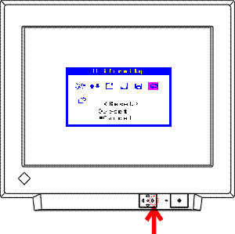

Factory Mode
Key Operation Specification
Sync Sw function
- Power On the SW pressing the down key of the Quick Set Control
Pad to change the sync mode.
Adjustment Lock
- Power On the SW with pressing the AUTO-SIZING Button
- To cancel the lock, repeat the above procedure.
How to get into Factory Mode
- Display "Reset" in ScreenManager User Mode.
- Press the right-arrow key of the Quick Set Control Pad twice
for a few seconds to get into the factory mode.

How to return to user mode
|
After finishing the adjustments at factory mode, be sure to get
back into User Mode. |
- Turn Off the Power SW and turn it ON again. Or, display main
menu of the factory mode and select the "EXIT" icon
to press the down-arrow key for a few seconds.
How to cancel compulsory factory mode
- Turn off the SW after performing SETUP or RESET.
|